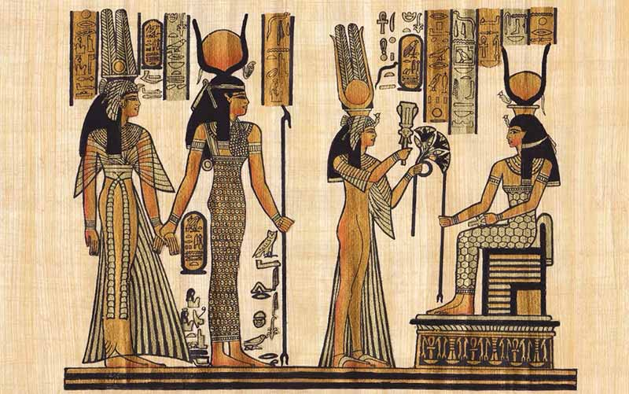

Parfümün tarihi insanlık tarihi kadar eskidir. “Parfüm” kelimesi Latince “per fumum” ifadesinden gelmektedir ve “duman aracılığıyla” anlamına gelir. Bunun sebebi, eski dönemlerde güzel kokuların çoğunlukla yakılan bitkilerden ve reçinelerden elde edilmesidir.
İlk parfüm kullanımlarına antik uygarlıklarda rastlanmaktadır.
Özellikle Antik Mısır döneminde insanlar güzel kokuları hem günlük yaşamda hem de dini törenlerde kullanmışlardır. Mısırlılar, tanrılara sunu yapmak için çeşitli aromatik bitkileri yakmış ve yağlarla karıştırarak kokulu karışımlar üretmişlerdir.
Aynı zamanda bu kokular mumyalama işlemlerinde de kullanılmıştır.
Parfüm kültürü daha sonra Antik Yunan ve Roma İmparatorluğu dönemlerinde de gelişmeye devam etmiştir. Bu toplumlarda parfüm yalnızca dini amaçlarla değil, aynı zamanda kişisel bakım ve estetik amaçlarla da kullanılmaya başlanmıştır. Özellikle Roma döneminde parfümler oldukça yaygın hale gelmiş ve farklı kokular günlük yaşamın bir parçası olmuştur.
Orta Çağ’da parfüm üretimi daha çok Doğu dünyasında gelişmiştir. Arap bilim insanları bitkilerden koku elde etmek için damıtma yöntemlerini geliştirmiştir. Bu gelişme parfüm üretiminde önemli bir dönüm noktası olmuştur. Daha sonra bu teknikler Avrupa’ya yayılmış ve parfüm sanayisinin temelleri atılmıştır.
Modern parfüm endüstrisi ise özellikle Fransa’da gelişmiştir. Günümüzde Grasse şehri dünyanın en önemli parfüm merkezlerinden biri olarak kabul edilmektedir. Burada yetiştirilen çiçekler ve geliştirilen üretim teknikleri sayesinde parfüm üretimi büyük bir sektör haline gelmiştir.
Günümüzde parfümler yalnızca güzel kokular değil, aynı zamanda insanların tarzını ve kişiliğini ifade eden önemli bir unsur haline gelmiştir. Farklı notaların birleşmesiyle oluşturulan modern parfümler, geçmişten günümüze
uzanan zengin bir kültürün ve sanatın ürünü olarak görülmektedir.
